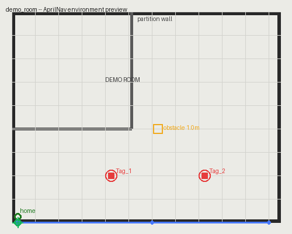

A configurable indoor quadcopter navigation & AprilTag simulation toolbox. Upload your own floor plan, place your own tags and flight paths, and simulate a flight through your space — no hardcoded environment, no MATLAB scripting required to get started.
Upload a floor-plan image, calibrate real-world scale and origin, place AprilTags and obstacles, and draw flight paths — via an interactive GUI or a plain JSON config file.
A full 6-DOF quadcopter dynamics + PID control model (Simulink) flies the staged trajectory using your environment's real vehicle parameters, scale, and origin.
Default proximity-based detection simulation, or optional real
detection from captured photos via MATLAB's Computer Vision
Toolbox (readAprilTag).
Post-flight plots annotate exactly when and where each tag was detected, with an optional lightweight 3D VR animation of the flight.

The bundled demo_room environment — tags (red), an
obstacle (yellow), the saved flight path (blue), and the home
point (green). Add more screenshots (Setup wizard, 3D VR view)
by dropping images into this Space and extending this section.
addpath(genpath(AprilNav_Root()));
AprilNav_Check(); % pre-flight sanity check
AprilNav_EnvironmentSetup(); % build your own environment...
AprilNav_Env_SetActive('demo_room'); % ...or try the bundled demo
AprilNav_UsePath('Out and back');
% open simulink/QuadcopterDynamics.slx, run it, then:
AprilNav_Results();
Full documentation, the config schema reference, and architecture
notes live in the repository's docs/ folder.
CREDITS.md and LICENSE in the repository
for full attribution and license terms.